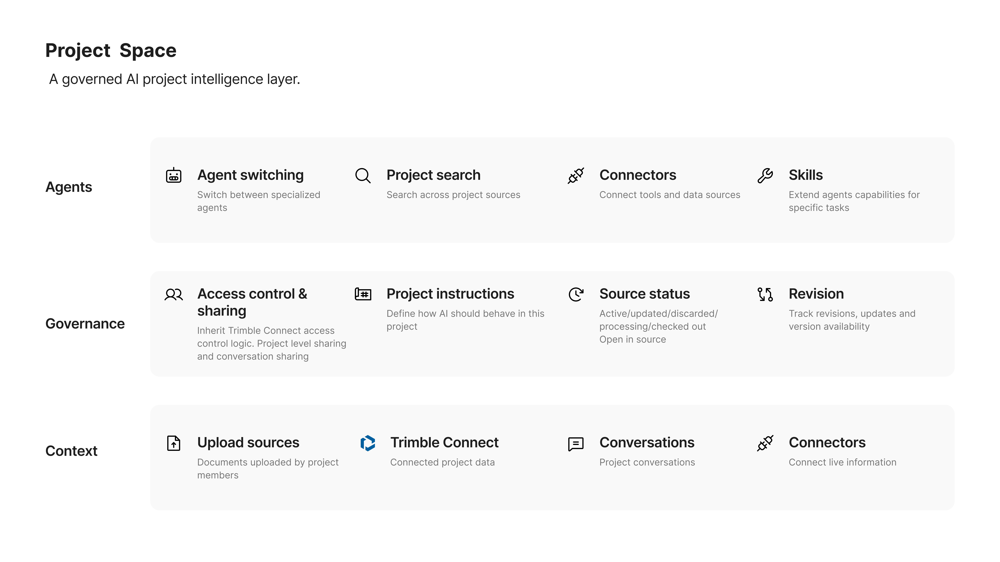
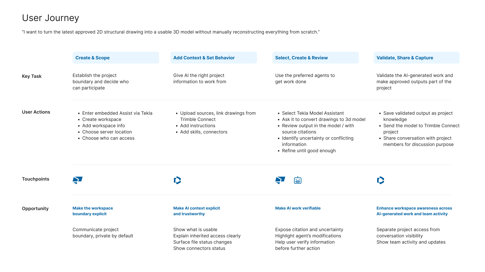

AI is moving toward persistent workspaces
AI products are evolving from isolated prompts toward persistent, instruction-driven, source-connected workspaces, and then toward agent-enabled execution environments. ChatGPT, Claude, Perplexity, NotebookLM, GitHub Copilot, and AI coding tools all validate parts of that model.
Why this matters more in AECO
Three converging reasons.
Information is structurally fragmented. Project knowledge lives across BIM models, drawings, specs, RFIs, submittals, schedules, meetings, emails, contracts, and multiple CDEs. Research on BIM workflows shows projects increasingly managed across several CDEs, with contractual and technical gaps limiting how well they connect. Autodesk's research names the same root cause differently: disconnected systems and reactive coordination. The result isn't one source of truth. It's several, often disagreeing.
The industry loses time to searching, not just doing. Construction managers and executives spend an average of 11.5 hours a week researching and analyzing data; BIM/VDC and preconstruction roles spend even more. That overhead becomes delayed decisions, duplicated analysis, and coordination work that shouldn't exist.
Adoption is outrunning trust. 98% of Design & Make leaders already use at least one AI tool, and 59% expect to adopt agentic AI within a year. Yet 60% raise security concerns and 50% name AI integration as a major challenge. Adoption isn't the bottleneck anymore. Governance is.
The promise of a Project Space here isn't "better organization." It's faster retrieval of approved context, consistent AI behavior across sessions, less repeated briefing, a reusable record of decisions, and less context lost at handoffs.
The design challenge
A generic "folder for chats and files" won't work here. AECO's project-based delivery, multi-party collaboration, and revision-sensitive information raise the bar. The product has to be trustworthy, traceable, permission-aware, and connected to systems teams already use.
How might we create a persistent AI workspace where agents reason over the right information, at the right time, for the right people, while keeping context current, permissions intact, and decisions traceable?
| Challenge | Product question |
|---|---|
| Context | What information should the AI know? |
| Freshness | How do we ensure it's still current? |
| Governance | Who is allowed to see and use it? |
| Accountability | Can people trace why AI said something? |
Every decision below answers one row of this table.
Reframing the question
AECO already has a natural container for AI work: the project. It brings together the people, information, decisions, and systems, like Trimble Connect, needed to deliver an outcome.
So instead of asking "what should this conversation remember," the better question is: what should AI know about this project? That reframe is the hinge the product direction turns on.
A project is not just a collection of information
In AECO, project information is:
- Distributed, across CDEs, files, links, conversations
- Shared, across owners, architects, engineers, contractors
- Permission-controlled, access varies by person, even within one project
- Revision-sensitive, versions get superseded or invalidated
- Consequential, AI output can influence real decisions
So the design has to answer more than "what can I give the model." It has to answer: is this the right information, is it current, is this user allowed to see it, can the answer be traced to evidence, and who's accountable for the outcome.
The product direction
Project Space is the governed AI project intelligence layer, not a generic chat interface, and not an autonomous project manager.
It brings together approved project context, project-level instructions, AI agents, conversations, search, source evidence, and collaboration, so people and agents work from the same context, inside the boundaries that context already carries.

Context that survives switching agents
A conversation is temporary. A project persists.
Users establish context once (anchor a project to Trimble Connect, upload files, add links, set project-level instructions, add connectors and skills) and carry it across conversations and agents.
The key decision: switching agents doesn't mean switching context. Agents can differ in capability or approach, but they all operate inside the same governed environment, so no one re-briefs a new agent from zero.
Trust decision: permission follows the source
Connecting a project to AI shouldn't create a new way to bypass permissions. If a user can't access something in Trimble Connect, the AI can't retrieve it for them either.
For projects shared across an organization, AI access inherits the existing Trimble Connect access model. The AI operates inside the same boundary as the user, not a parallel one.
Trust decision: accessible isn't the same as current
Permission is only half of trustworthy context. Information also changes: documents get updated, superseded, or discarded. Treating every connected file as equally valid lets context degrade quietly, and the failure stays invisible until someone acts on stale information.
Project Space makes source status explicit: Processing → Active → Updated → Superseded → Discarded. Users can always see whether a source is current, changed, or no longer valid.
Trust decision: evidence is part of the answer
A plausible answer isn't enough. Users need to know where it came from, which revision, whether it's still active, and whether they can open the original. Evidence ships with the answer, not below it.
Ask for the latest structural drawing for Level 03, and the answer arrives with its source attached: Structural Plan — S-203, Rev 04, Active, updated Aug 6, with a link to open it in Trimble Connect.
The harder case is disagreement. If a drawing says 300mm, a spec says 350mm, and a meeting note says 300mm, the system shouldn't quietly pick one and sound confident. It surfaces the conflict and says it can't determine which requirement is authoritative. Trust doesn't come from sounding more confident. It comes from making evidence and uncertainty visible.
Scoping the MVP: trust first, execution later

The broader vision is agents helping execute workflows across project systems, but autonomous execution carries far more risk than answering questions does. So for the MVP: build a trusted project context hub before an autonomous project manager.
Connect trusted project information. Govern by respecting permissions, instructions, and revisions. Work by letting users switch agents, search, and ask questions. Verify by surfacing sources and uncertainty. Collaborate with conversations private by default, shared intentionally. Capture validated outputs as shared project knowledge.